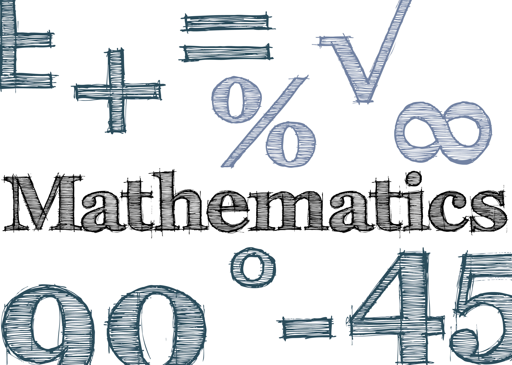
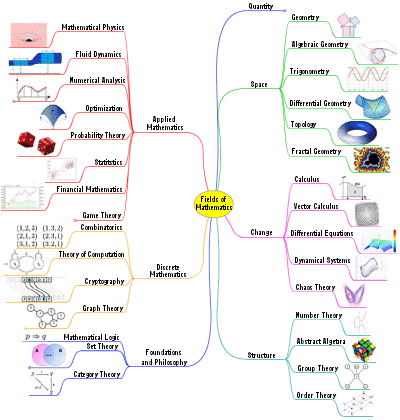
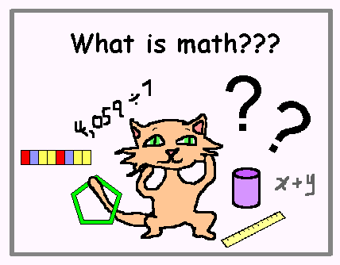

Mathematics

History of Mathematics

Several civilizations — in China, India, Egypt, Central America and Mesopotamia — contributed to mathematics as we know it today. The Sumerians were the first people to develop a counting system. Mathematicians developed arithmetic, which includes basic operations, multiplication, fractions and square roots. The Sumerians’ system passed through the Akkadian Empire to the Babylonians around 300 B.C. Six hundred years later, in America, the Mayans developed elaborate calendar systems and were skilled astronomers. About this time, the concept of zero was developed.
As civilizations developed, mathematicians began to work with geometry, which computes areas and volumes to make angular measurements and has many practical applications. Geometry is used in everything from home construction to fashion and interior design.
Geometry went hand in hand with algebra, invented in the ninth century by a Persian mathematician, Mohammed ibn-Musa al-Khowarizmi. He also developed quick methods for multiplying and diving numbers, which are known as algorithms — a corruption of his name.
Algebra offered civilizations a way to divide inheritances and allocate resources. The study of algebra meant mathematicians were solving linear equations and systems, as well as quadratics, and delving into positive and negative solutions. Mathematicians in ancient times also began to look at number theory. With origins in the construction of shape, number theory looks at figurate numbers, the characterization of numbers, and theorems.
What is mathematics?

Mathematics is the science that deals with the logic of shape, quantity and arrangement. Math is all around us, in everything we do. It is the building block for everything in our daily lives, including mobile devices, architecture (ancient and modern), art, money, engineering, and even sports.
Since the beginning of recorded history, mathematic discovery has been at the forefront of every civilized society, and in use in even the most primitive of cultures. The needs of math arose based on the wants of society. The more complex a society, the more complex the mathematical needs. Primitive tribes needed little more than the ability to count, but also relied on math to calculate the position of the sun and the physics of hunting
Why Mathematics is important?
Can you imagine going to the store and paying for your groceries with a $100 bill. You just stand there and wait for the change, but have no idea how much it should be, or what amount of change you should receive. This is kind of like a first grader starting to use money, isn't it. They are all excited about spending and paying although they know nothing about doing math.
Math is the one skill you need to master in your life, even if it is the only one, you will at least be able to live without being cheated, robbed or abused. You see, without math we just cannot live or survive. We need math in our everyday lives. Just doing the basic essentials is dependant on your ability to do math.
Let's take for instance time, in today's society one cannot survive without a watch. Just make an experiment and see how many times a day you use your watch. From getting up in the morning to going from one place to another, and going to bed at night, time is as essential as breathing to us. We are creatures of habit, planning every minute of our lives.
Driving from one city to another requires some basic skill in math. How else will you know the distance, how long it will take you to get there, or even be able to read the road signs? Planning your time has become a dependent way of life.
At some point in your life math will become boring, difficult and irrelevant, and you might think that this is not for you, but do you realize the severity of existing without math. Math will make you smarter and put you ahead of the pack, so that you might just be able to get your dream job. Basically every good position in the business world requires some form of math.
Without math you won't be able to do science, nursing, engineering, become a doctor or even get a business degree. Our very livelihood is dependant on our ability to calculate, subtract or multiply. You could skip math but then you would just have to be satisfied with working at the local diner. Serving soft drinks and washing floors, and even then, you need some math skills.
Doing every kind of sport requires a basic skill of knowing distance and calculating. In all of these you need to know math to understand strategy and planning your next move. Without math you won't be able to succeed in doing sports, and if you desire to excel in this area, you have to be smart. Gone are the days when it was the lazy ones that did sports. Today if you want to receive a sports scholarship you need to be smart. Sports have become a very competitive arena and only the fittest and the smartest will survive.
What about the world of gigs, hard drives, codes and data. Everything is dependant upon fast, easy and quick information. Every business has a computer and someone that knows how to work on it. Even a secretary needs some basic math skills. It's essential to her very livelihood.
So, why is math important in your life? We live in a fast growing sector of information and without math you won't be able to keep up. Don't lose your momentum, but be the wolf ahead of the pack. Leading them, and not following them. Be the trendsetter by becoming the best you can be. Use your mind to your advantage!
The only person who is educated is the one who has learned how to learn and change.